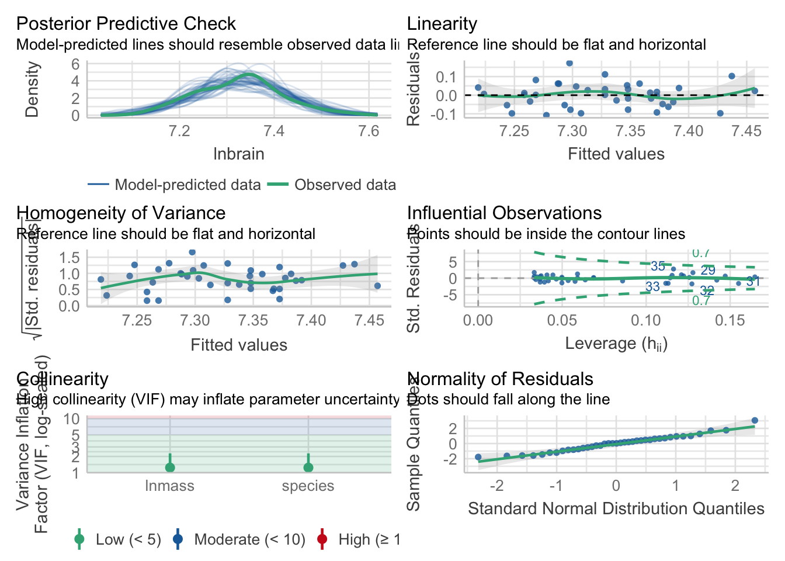

For our purposes, we’ll focus on fire severity and plant cover as predictors.
1.1 Visualizing
I’m not going to lie, visualizing multiple continuous variables is as much of an art as a science. One can use colors and sizes of points, or slice up the data into chunks and facet that. Here are a few examples.
# R2 for Linear Regression
R2: 0.170
adj. R2: 0.151
Not amazing fit, but, the coefficients are clearly different from 0.
1.4 Visualization
This is where things get sticky. We have two main approaches. First, visualizing with component + residual plots
crPlots(keeley_mlr, smooth=FALSE)
But the values on the y axis are….odd. We get a sense of what’s going on and the scatter after accounting for our predictor of interest, but we might want to look at, say, evaluation of a variable at the mean of the other.
Or, we can use modelr to explore the model and combine that exploration with the data. Let’s get the curve for cover at four levels of fire severity. We’ll use both modelr::data_grid and modelr::add_predictions for a nice easy workflow.
Nice, no? Sadly, add_predictions doesn’t give us variance (but see my code in https://github.com/tidyverse/modelr/issues/38 for a possible solution if you want it). If you want those, you’ll have to go back to using augment, although you can still use it with data_grid. Actually, let’s try that.
planktonSummary.csv showing plankton from Lake Biakal (thanks, Stephanie Hampton). Evluate how Chlorophyll (CHLFa) is affected by other predictors.
SwaddleWestNile2002NCEAS_shortnames.csv is about the prevalence of West Nile virus in Birds around Sacramento county in California. What predicts human WNV?
Using the following workflow, analyze these data sets.
# Load the data# Perform a preliminary visualization. Play with this and choose two predictors# Fit a MLR model# Test Asssumptions and modify model if needed# Evaluate results# Visualize results
2. Many Categorical Varibles
We’ll work with the zooplankton depredation dataset for two-way linear model with categorical predictors. This is a blocked experiment, so, each treatment is in each block just once.
zooplankton <-read.csv("./data/18e2ZooplanktonDepredation.csv")ggplot(data = zooplankton,aes(x = treatment, y = zooplankton)) +geom_boxplot()
ggplot(data = zooplankton,aes(x = block, y = zooplankton)) +geom_boxplot()
Warning: Continuous x aesthetic -- did you forget aes(group=...)?
Oh. That’s odd. What is up with block? AH HA! It’s continuous. We need to make it discrete to work with it.
This is still a little odd, though, as our treatments are evaluated in block 1 control. To truly get just the treatment effect, we need to look at the estimated marginal means - the emmeans! The big thing about emmeans is that it creates a reference grid based on the blocks. It then calculates the treatment effect averaged over all blocks, rather than just in block 1.
treatment emmean SE df lower.CL upper.CL
control 3.02 0.205 8 2.548 3.49
high 1.38 0.205 8 0.908 1.85
low 2.00 0.205 8 1.528 2.47
Results are averaged over the levels of: block
Confidence level used: 0.95
2.3 Evaluating treatment differences
Here, emmeans gets interesting.
contrast(zoop_em, method ="pairwise") |>confint()
contrast estimate SE df lower.CL upper.CL
control - high 1.64 0.289 8 0.813 2.467
control - low 1.02 0.289 8 0.193 1.847
high - low -0.62 0.289 8 -1.447 0.207
Results are averaged over the levels of: block
Confidence level used: 0.95
Conf-level adjustment: tukey method for comparing a family of 3 estimates
Note the message that we’ve averaged over the levels of block. You can do any sort of posthoc evaluation (query your model!) as you wanted before. And, you could have done the same workflow for block as well.
2.4 Faded Examples
Given then similarity with models from last week, let’s just jump right into two examples, noting a key difference or two here and there.
To start with, let’s look at gene expression by different types of bees.
Did that last one pass the test of non-additivity?
3. Mixing Categorical and Continuous Variables
Combining categorical and continuous variables is not that different from what we have done above. To start with, let’s look at the neanderthal data from class.
Now, the CIs are going to be off as this wasn’t all tested in the same model, but you begin to get a sense of whether things are parallel or not, and whether this covariate is important.
What other plots might you produce?
As this is a general linear model, good olde lm() is still there for us.
neand_lm <-lm(lnbrain ~ species + lnmass, data=neand)
3.1 Testing Assumptions
In addition to the ususal tests, we need to make sure that the slopes really are parallel. We do that by fitting a model with an interaction and testing it (which, well, if there was and interaction, might that be interesting).
First, the usual
check_model(neand_lm)

#And now look at residuals by group/predictorslibrary(car)residualPlots(neand_lm, tests=FALSE)
Nice! But, what if we wanted to know what value of the covariate we were using? To get those, we need to use say that we are using lnmass as a reference grid - i.e. we’re marginalizing over it.
You can also specify other levels of mass, if you are more interested in those for biological relevance. You can even specify multiple levels, or even a smooth curve and plot the results!
We can also see the estimates of the slopes for each species (which is more useful when there is an interaction - as summary is just fine without.)
#no interactionemtrends(neand_lm, ~species, var ="lnmass")
Visualization is funny, as you want to make parallel lines and also get the CIs right. Rather than rely on ggplot2 to do this natively, we need to futz around a bit with generating predictions
So, here we have fit values, lower confidence interval, and upper confidence intervals. As we have not fed augment() any new data, these values line up with our neand data frame, so can use them immediately.
And there we have nice parallel lines with model predicted confidence intervals!
3.4 Examples
I’ve provided two data sets:
1) 18e4MoleRatLayabouts.csv looking at how caste and mass affect the energy mole rates expend
2) 18q11ExploitedLarvalFish.csv looking at how status of a marine area - protected or not - influences the CV around age of maturity of a number of different fish (so, age is a predictor)
Using the following workflow, analyze these data sets.
# Load the data# Perform a preliminary visualization# Fit a model# Test Assumptions and modify model if needed# Evaluate results# Post-hocs if you can# Visualize results